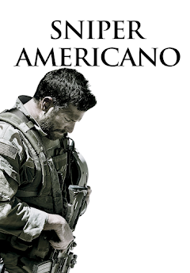
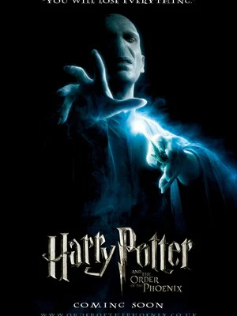
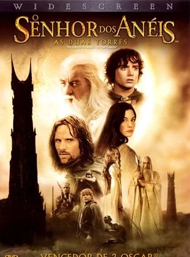

“Desmond T. Doss (Andrew Garfield) é um jovem que sonha ser médico do exército e, que, durante a Segunda Guerra Mundial, se recusa a pegar em uma arma e matar pessoas. Porém, durante a Batalha de Okinawa ele trabalha na ala médica e salva mais de 75 homens, sendo condecorado. Doss foi o primeiro Opositor Consciente da história norte-americana a receber a Medalha de Honra do Congresso.”

Chris Kyle é um atirador de elite das forças especiais da marinha americana. Durante dez anos, ele matou mais de 150 pessoas, tendo recebido diversas condecorações por sua atuação. Kyle também é marido e pai. Mas depois de quatro missões no Iraque, o atirador já não consegue mais deixar a guerra para trás, mesmo estando de volta à casa

Harry Potter (Daniel Radcliffe) é um garoto órfão de 10 anos que vive infeliz com seus tios, os Dursley. Até que, repentinamente, ele recebe uma carta contendo um convite para ingressar em Hogwarts, uma famosa escola especializada em formar jovens bruxos.

O hobbit, Frodo, recebe a missão de salvar a Terra-Média do Senhor do Escuro, conhecido como Sauron. Na sua jornada, ele precisa destruir o Um Anel na Montanha da Perdição e, para isso, conta com a ajuda de oito companheiros que juntos formam a Sociedade do Anel.
O longa acompanha a vida de Noah (Nicole Wallace), que deve deixar sua vida pacata para trás e se mudar para a mansão do marido de sua mãe e assim, dar um novo passo em sua vida, sem seus amigos e sua namorada. Em pouco tempo, Noah conhece seu novo meio-irmão, Nick (Gabriel Guevara).